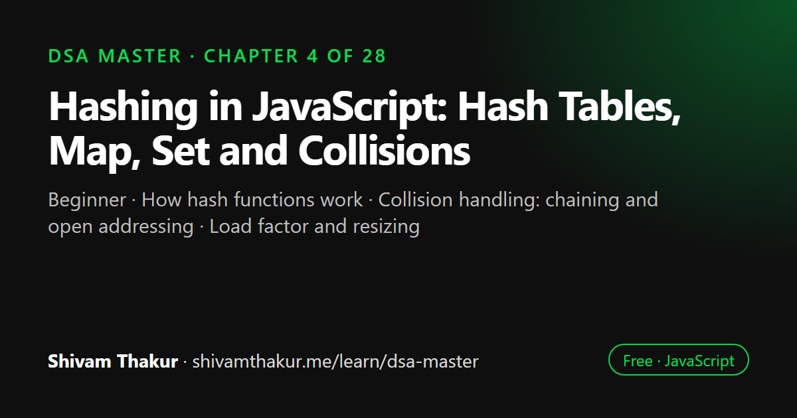

Chapter 4 of 28 · Beginner
Hashing in JavaScript: Hash Tables, Map, Set and Collisions
Hashing — The Highest-Leverage Tool in Interview Prep

A hash table stores key-value pairs by running each key through a hash function that computes where it belongs, which gives O(1) average lookup, insertion and deletion. This chapter builds a hash table from scratch, explains collisions, chaining, open addressing and resizing, compares Object, Map, Set and WeakMap, and teaches the five hashing patterns used in interviews.
In this chapter you will learn
- How hash functions work
- Collision handling: chaining and open addressing
- Load factor and resizing
- Map, Set, WeakMap and WeakSet
- Frequency, complement and grouping patterns
4.0 Why This Chapter Might Be the Most Important One in the Book
If you could only learn one data structure before walking into a coding interview, it should be the hash table. An enormous fraction of "medium" difficulty interview problems have a brute-force O(n²) solution and a hash-table-based O(n) solution, and the entire skill of recognizing which is which comes down to one question: "can I trade some memory to remember something I've already seen, so I don't have to search for it again?"
We already previewed this exact idea twice: the usernameExists example in Chapter 1 (Array scan vs. Set.has), and the memoization Map in Chapter 2 (remembering computed Fibonacci values). This chapter makes that idea rigorous — we'll open the hood on how a hash table achieves O(1) average-case lookup, not just that it does.
4.1 The Problem Hashing Solves
Recall from Chapter 3: checking whether a value exists in an array is O(n) — you must scan. Recall from Chapter 1: binary search gets this down to O(log n), but only if the data is sorted, and even then, insertion into a sorted array is O(n) (shifting elements).
The question hashing answers: can we get O(1) — genuinely constant time, not even O(log n) — for lookup, insertion, and deletion, without requiring sorted order?
Real-Life Analogy: The Coat Check
Imagine walking into a theater and handing your coat to a coat-check attendant. They don't search through every coat on the rack to figure out where to put yours. Instead, they compute a number (say, based on your ticket number) and hang your coat at that exact, predetermined position on the rack. When you come back, you hand over your ticket, they compute the same number, and walk directly to that position — no searching required, regardless of how many hundreds of coats are on the rack.
This is the entire idea of a hash table: use a function to compute exactly where something belongs, so you never have to search for it.
4.2 How a Hash Function Works (From First Principles)
Definition: A hash function is a function that takes an input of arbitrary size (a string, a number, any data) and deterministically produces an output of fixed size (usually an integer), called a hash code.
4.2.1 The Core Requirements of a Good Hash Function
- Deterministic — the same input must always produce the same hash code. If
hash("cat")returns42today, it must return42every single time, forever, in this run of the program. - Fast to compute — O(1) or close to it relative to the size of typical inputs (technically O(k) for a string of length k, but k is usually small and bounded, so we treat it as effectively constant).
- Uniform distribution — good hash codes should spread out across the available range as evenly as possible, minimizing the chance that two different inputs land on the same value.
4.2.2 A Simple Hash Function, Built From Scratch
Let's build a genuinely simple (not production-grade, but illustrative) hash function for strings, so the mechanism stops being a black box.
function simpleHash(str, bucketCount) {
let hashCode = 0;
for (let i = 0; i < str.length; i++) {
const charCode = str.charCodeAt(i); // e.g., 'a' -> 97
hashCode = (hashCode * 31 + charCode) % bucketCount;
// multiply-and-add: a classic, simple, surprisingly effective hashing strategy
}
return hashCode;
}
console.log(simpleHash('cat', 10)); // some number between 0-9, deterministic every run
console.log(simpleHash('dog', 10)); // a different (usually) number between 0-9Dry Run: Hashing 'cat' with bucketCount = 10
str = 'cat', bucketCount = 10
charCodeAt: 'c'=99, 'a'=97, 't'=116
i=0: hashCode = (0 * 31 + 99) % 10 = 99 % 10 = 9
i=1: hashCode = (9 * 31 + 97) % 10 = (279 + 97) % 10 = 376 % 10 = 6
i=2: hashCode = (6 * 31 + 116) % 10 = (186 + 116) % 10 = 302 % 10 = 2
Final hash: 2So 'cat' would be stored at bucket index 2 in an array-backed hash table with 10 buckets.
4.3 From Hash Function to Hash Table: The Bucket Array
Definition: A hash table is a data structure that stores key-value pairs by using a hash function to compute an array index (a "bucket") for each key, enabling average-case O(1) insertion, lookup, and deletion.
ASCII Visualization: The Bucket Array
Buckets (an array of size 10):
Index: 0 1 2 3 4 5 6 7 8 9
[ ] [ ] [cat:5] [ ] [ ] [ ] [ ] [ ] [ ] [ ]
^
'cat' hashed to index 2, so we store the
key-value pair {cat: 5} there directly.
To look up 'cat':
1. Compute hash('cat') = 2 <- O(1) (string length is bounded)
2. Go DIRECTLY to buckets[2] <- O(1) direct array access (Chapter 3!)
3. Found it. No searching required.This is exactly why hash table operations are O(1) on average: we never search. We compute an address and go directly there, exactly like array index access from Chapter 3 — because that's literally the mechanism underneath: a hash table is an array, with a hash function acting as the address-calculator.
4.3.1 Building a Minimal Hash Table From Scratch
Let's implement one ourselves, to fully demystify what Map is doing for you under the hood.
class SimpleHashTable {
#buckets;
#bucketCount;
constructor(bucketCount = 16) {
this.#bucketCount = bucketCount;
this.#buckets = new Array(bucketCount).fill(null).map(() => []);
// each bucket is its own array, to handle collisions (explained in 4.4)
}
#hash(key) {
const str = String(key);
let hashCode = 0;
for (let i = 0; i < str.length; i++) {
hashCode = (hashCode * 31 + str.charCodeAt(i)) % this.#bucketCount;
}
return hashCode;
}
set(key, value) {
const index = this.#hash(key);
const bucket = this.#buckets[index];
for (const pair of bucket) {
if (pair[0] === key) {
pair[1] = value; // key already exists, update it
return;
}
}
bucket.push([key, value]); // new key, add it
}
get(key) {
const index = this.#hash(key);
const bucket = this.#buckets[index];
for (const pair of bucket) {
if (pair[0] === key) {
return pair[1];
}
}
return undefined; // not found
}
has(key) {
return this.get(key) !== undefined;
}
delete(key) {
const index = this.#hash(key);
const bucket = this.#buckets[index];
for (let i = 0; i < bucket.length; i++) {
if (bucket[i][0] === key) {
bucket.splice(i, 1);
return true;
}
}
return false;
}
}
const table = new SimpleHashTable();
table.set('name', 'Alice');
table.set('age', 30);
console.log(table.get('name')); // 'Alice'
console.log(table.get('age')); // 30
console.log(table.has('job')); // falseWe use private class fields (#buckets, #bucketCount, #hash) — modern ES2022+ JavaScript syntax for genuine encapsulation, not just a naming convention like the old _buckets underscore trick. This means table.#buckets from outside the class throws a syntax error, providing real access control.
4.4 Collisions: The Central Problem of Hash Table Design
Definition: A collision occurs when two different keys hash to the same bucket index.
4.4.1 Collision Resolution Strategy #1: Separate Chaining
This is what our SimpleHashTable above already implements: each bucket holds a small collection (a list) of all key-value pairs that hashed to that index, and lookups within a bucket fall back to a linear scan of just that bucket's (hopefully small) contents.
Buckets:
Index: 0 1 2 3
[ ] [ ] [['cat',5], ['ate',9]] [ ]
^ ^
Both 'cat' and 'ate' happened to hash to index 1.
They're stored together in a small list (a "chain").
Looking up 'ate': hash('ate') = 1 -> go to bucket 1 -> scan the
small list [['cat',5], ['ate',9]] -> find 'ate' -> return 9.This is called "chaining" because colliding entries form a chain (traditionally implemented as a linked list — see Chapter 5 — though we used a plain array above for simplicity).
4.4.2 Collision Resolution Strategy #2: Open Addressing (Linear Probing)
The alternative approach: instead of storing multiple entries per bucket, if a bucket is already occupied, probe (check) the next available slot according to some fixed sequence, until an empty slot is found.
Buckets (each slot holds AT MOST one entry):
Index: 0 1 2 3 4
[ ] ['cat',5] [ ] [ ] [ ]
Insert 'ate', which also hashes to index 1:
Index 1 is occupied -> probe index 2 (linear probing: just check next slot)
Index 2 is empty -> place 'ate' there
Index: 0 1 2 3 4
[ ] ['cat',5] ['ate',9] [ ] [ ]
Looking up 'ate': hash('ate')=1 -> occupied by 'cat', not a match ->
probe index 2 -> found 'ate' -> return 9.4.5 Load Factor and Resizing
Definition: The load factor of a hash table is the ratio of stored elements to total bucket count: loadFactor = numberOfEntries / numberOfBuckets.
As load factor increases, chains get longer (in chaining) or probe sequences get longer (in open addressing) — both degrade average lookup time away from the ideal O(1). Well-implemented hash tables monitor their load factor and resize (allocate more buckets and redistribute all existing entries) once it crosses a threshold (commonly around 0.7–0.75).
4.6 JavaScript's Built-In Hashing Tools: Object, Map, Set, WeakMap, WeakSet
Now that we've built a hash table from scratch and understand exactly what's happening inside, let's cover JavaScript's actual built-in tools in depth — what each is for, and the specific trade-offs between them.
4.6.1 Plain Objects as Hash Tables (The Historical Default)
const ages = {};
ages['Alice'] = 30;
ages['Bob'] = 25;
console.log(ages['Alice']); // 30
console.log('Alice' in ages); // true
console.log(Object.keys(ages)); // ['Alice', 'Bob']Plain objects have historically been JavaScript's default "dictionary" structure, and they do use hashing internally for property lookup. But they carry real limitations that Map was specifically introduced (in ES6/2015) to fix:
4.6.2 Map — The Correct Modern Choice for General-Purpose Hashing
const ages = new Map();
ages.set('Alice', 30);
ages.set('Bob', 25);
ages.set(42, 'a number key'); // any type can be a key!
ages.set({ id: 1 }, 'an object key'); // even objects!
console.log(ages.get('Alice')); // 30
console.log(ages.has('Bob')); // true
console.log(ages.size); // 4 — O(1), built in
console.log(ages.delete('Bob')); // true, and removes it
for (const [key, value] of ages) {
console.log(key, value); // guaranteed insertion order, ALWAYS, no numeric-key quirk
}4.6.3 Set — Hashing for Uniqueness, Not Key-Value Pairs
const uniqueNumbers = new Set([1, 2, 2, 3, 3, 3]);
console.log(uniqueNumbers); // Set(3) {1, 2, 3}
console.log(uniqueNumbers.has(2)); // true — O(1) average case
console.log(uniqueNumbers.size); // 3
uniqueNumbers.add(4);
uniqueNumbers.delete(1);
console.log([...uniqueNumbers]); // [2, 3, 4] — convert to array when neededA Set is, conceptually, a Map where you only care about the keys, not associated values — same underlying hashing mechanism, same O(1) average-case has/add/delete. This is precisely the structure behind the Chapter 1 usernameExists example and the Chapter 3 sliding-window seen tracker.
4.6.4 WeakMap and WeakSet — Hashing That Respects Garbage Collection
This is the pair most tutorials skip, and it's genuinely important, JavaScript-specific, memory-management-adjacent knowledge.
The problem WeakMap/WeakSet solve: a regular Map holds a strong reference to every key it stores. This means if you use an object as a Map key, that object can never be garbage collected — even if every other part of your program has completely stopped using it — because the Map itself is still "holding on" to it.
let user = { name: 'Alice' };
const metadata = new Map();
metadata.set(user, { loginCount: 5 });
user = null; // we're done with `user`... or are we?
// The object { name: 'Alice' } CANNOT be garbage collected, because
// `metadata` (the Map) still holds a strong reference to it internally,
// even though our own `user` variable no longer points to it.
// This is a memory leak if `metadata` lives for the app's entire lifetime.WeakMap solves this by holding weak references to its keys — references that do not prevent garbage collection:
let user = { name: 'Alice' };
const metadata = new WeakMap();
metadata.set(user, { loginCount: 5 });
user = null; // now the object CAN be garbage collected, because WeakMap's
// reference to it doesn't count as a reason to keep it alive.
// The entry in metadata simply vanishes once the key is collected.Key Restrictions of WeakMap/WeakSet (These Are Not Arbitrary — They're a Direct Consequence of Weak References)
- Keys must be objects (or, as of newer JS versions, registered Symbols) — never primitives like strings or numbers. This makes sense once you understand why: primitives aren't garbage collected in the same reference-counted/reachability sense objects are, so "weak reference to a primitive" is a meaningless concept.
- Not iterable. No
.forEach, nofor...of, no.size, no way to list all keys. This is also a direct, unavoidable consequence: if you could iterate aWeakMap, you could observe whether a given object had been garbage collected yet by seeing if it's still in the list — which would make garbage collection timing observable and non-deterministic behavior would leak into your program's visible logic. JavaScript's designers deliberately closed this off.
4.7 The Hashing Pattern Playbook
Now let's build real muscle memory with the specific patterns that hashing enables, presented as a playbook you should recognize instantly.
4.7.1 Pattern: Frequency Counting
The signal: "count occurrences," "find the most/least frequent," "check if characters/elements repeat."
function characterFrequency(str) {
const freq = new Map();
for (const char of str) {
freq.set(char, (freq.get(char) || 0) + 1);
}
return freq;
}
console.log(characterFrequency('banana'));
// Map(3) { 'b' => 1, 'a' => 3, 'n' => 2 }Dry run:
str = 'banana'
char='b': freq.get('b') is undefined -> (undefined || 0)+1 = 1 -> freq={b:1}
char='a': freq.get('a') is undefined -> 0+1 = 1 -> freq={b:1,a:1}
char='n': freq.get('n') is undefined -> 0+1 = 1 -> freq={b:1,a:1,n:1}
char='a': freq.get('a') is 1 -> 1+1 = 2 -> freq={b:1,a:2,n:1}
char='n': freq.get('n') is 1 -> 1+1 = 2 -> freq={b:1,a:2,n:2}
char='a': freq.get('a') is 2 -> 2+1 = 3 -> freq={b:1,a:3,n:2}
Final: {b:1, a:3, n:2}- Naive (nested loop counting each character against every other): O(n²).
- Hash-based frequency counting: O(n) — one pass, O(1) average-case map operations per character.
4.7.2 Pattern: The Complement/Two-Sum Pattern
We solved Two Sum with sorted-array two-pointers in Chapter 3 — but that required sorting (O(n log n)) and lost original indices. Hashing solves the unsorted, indices-matter version in a single O(n) pass.
function twoSumUnsorted(nums, target) {
const seen = new Map(); // value -> index
for (let i = 0; i < nums.length; i++) {
const complement = target - nums[i];
if (seen.has(complement)) {
return [seen.get(complement), i];
}
seen.set(nums[i], i);
}
return null;
}
console.log(twoSumUnsorted([2, 7, 11, 15], 9)); // [0, 1] (2 + 7 = 9)Dry run:
nums = [2, 7, 11, 15], target = 9
seen = {}
i=0, nums[0]=2: complement = 9-2 = 7. seen.has(7)? No. seen.set(2, 0) -> seen={2:0}
i=1, nums[1]=7: complement = 9-7 = 2. seen.has(2)? YES! seen.get(2) = 0.
return [0, 1]- Naive (nested loop checking every pair): O(n²).
- Hash-based complement lookup: O(n) time, O(n) space.
4.7.3 Pattern: Grouping by a Computed Key
The signal: "group anagrams," "group by category," "cluster items sharing some derived property."
function groupAnagrams(words) {
const groups = new Map();
for (const word of words) {
const signature = word.split('').sort().join(''); // canonical form: sorted letters
if (!groups.has(signature)) {
groups.set(signature, []);
}
groups.get(signature).push(word);
}
return [...groups.values()];
}
console.log(groupAnagrams(['eat', 'tea', 'tan', 'ate', 'nat', 'bat']));
// [['eat','tea','ate'], ['tan','nat'], ['bat']]Dry run (abbreviated):
'eat' -> sorted -> 'aet' -> groups: {aet: ['eat']}
'tea' -> sorted -> 'aet' -> groups: {aet: ['eat','tea']} (same key as 'eat'!)
'tan' -> sorted -> 'ant' -> groups: {aet: [...], ant: ['tan']}
'ate' -> sorted -> 'aet' -> groups: {aet: ['eat','tea','ate'], ant: ['tan']}
'nat' -> sorted -> 'ant' -> groups: {aet: [...], ant: ['tan','nat']}
'bat' -> sorted -> 'abt' -> groups: {aet: [...], ant: [...], abt: ['bat']}- Time: O(n · k log k), where
n= number of words,k= max word length (dominated by sorting each word to build its signature). - Space: O(n · k) to store all the grouped words.
4.7.4 Pattern: Existence/Membership Tracking (The Sliding Window Callback)
We already used this pattern in Chapter 3's longestUniqueSubstring (the seen Set). It's worth naming explicitly here as its own reusable playbook entry: whenever a sliding window or two-pointer algorithm needs to know "have I already included this value in my current window/range?", reach for a Set (or a Map if you need counts, not just booleans).
4.7.5 Pattern: Caching/Memoization (Full Circle to Chapter 2)
We built this in depth in Chapter 2 — the Map-based memoization cache is, quite literally, a hash table application. It's worth explicitly closing this loop: memoization is hashing applied to recursive function calls, using the function's arguments as the key and its (expensive-to-compute) return value as the value.
4.8 Edge Cases and Gotchas Checklist for Hashing Problems
NaNas a key or value. Unlike===,MapandSetcorrectly treatNaNas equal to itself (using the "SameValueZero" algorithm internally), sonew Set([NaN, NaN]).size === 1. This is actually more intuitive than raw===comparison (NaN === NaNisfalse!) — know this distinction; it's a common trivia question.+0and-0.Map/Settreat+0and-0as the same key (again, via SameValueZero), even thoughObject.is(+0, -0)isfalse. Another subtle but real distinction worth knowing.- Object keys and reference equality.
new Map().set({}, 'a')— a new{}object literal used as a key will never match another{}literal via.get(), because objects are compared by reference, not structural equality. Two separately-created objects with identical contents are different keys. - Case sensitivity in string keys.
'Cat'and'cat'are different keys by default — normalize with.toLowerCase()explicitly if the problem calls for case-insensitive matching. - Empty input. Does your frequency-counting/grouping code handle an empty array or string gracefully (returning an empty
Map/array, not throwing)? - Very large inputs and hash-flooding awareness (from section 4.5) — while not usually testable directly in an interview, it's worth being aware that a security-conscious system should never let untrusted external input directly determine hash bucket placement without safeguards.
4.9 Chapter Summary
This chapter opened the black box of the single highest-leverage data structure in interview preparation. We learned that hashing solves a very specific problem — getting O(1) average-case lookup, insertion, and deletion without requiring sorted order — by using a hash function to compute a direct storage address (a bucket index) for any key, so that lookups become direct array access (Chapter 3's O(1) again) rather than a search. We built a hash table completely from scratch, including a real (if simplified) hash function using the classic "multiply by an odd prime, take modulo" strategy, and saw exactly how collisions are handled via separate chaining (each bucket holds a small list) or open addressing (probe for the next free slot), and why collisions are mathematically inevitable by the pigeonhole principle, made intuitive by the birthday paradox.
We covered load factor and resizing, connecting it directly back to Chapter 3's amortized dynamic array analysis — the exact same "double when full, so the average cost per operation stays O(1)" idea applies here too. We established the fully accurate, nuanced complexity claim professionals actually make: hash table operations are O(1) average case, amortized, assuming a reasonably distributed hash function — not an unconditional guarantee, and worth stating with that precision in interviews, including awareness of hash-flooding attacks as a real-world consequence of poor/predictable hashing.
We then did a deep, practical tour of JavaScript's actual hashing toolkit: plain objects (string/Symbol keys only, prototype pollution risk, the surprising integer-key reordering quirk), Map (the correct modern default for general-purpose dictionaries — any key type, guaranteed insertion order, O(1) .size), Set (uniqueness/membership tracking, same underlying mechanism as Map with keys-only), and WeakMap/WeakSet (weak references that don't prevent garbage collection, deliberately non-iterable to avoid making GC timing observable — the right tool for attaching metadata to objects you don't own the lifecycle of).
Finally, we built a five-entry pattern playbook that will recur constantly throughout the rest of this book and in real interviews: frequency counting, complement/pair lookup, grouping by a computed key, existence tracking (closing the loop with Chapter 3's sliding window), and memoization (closing the loop with Chapter 2's recursion). If Chapter 1 taught you to measure algorithms and Chapter 2 taught you to think recursively, this chapter taught you the single most commonly reached-for tool for turning an O(n²) brute force into an O(n) solution.
4.10 Revision Notes
- Hash tables achieve O(1) average lookup by computing a direct address (bucket index) via a hash function, avoiding search entirely.
- A good hash function is deterministic, fast, and produces a uniform distribution across buckets.
- Collisions are mathematically inevitable (pigeonhole principle); handled via separate chaining (list per bucket) or open addressing (probe for next free slot).
- Load factor triggers resizing; resizing is O(n) but amortizes to O(1) per operation, identical reasoning to Chapter 3's dynamic array growth.
- Accurate complexity claim: O(1) average case, amortized, not an unconditional guarantee — worst case is O(n) with a poor hash function or adversarial input.
- Prefer
Mapover plain objects for general-purpose dictionaries in modern JS: any key type, guaranteed insertion order, O(1).size, no prototype pollution risk. WeakMap/WeakSethold weak references (object keys only, not iterable) — use for metadata on objects you don't control the lifecycle of, to avoid memory leaks.- The five-pattern playbook: frequency counting, complement lookup, grouping by computed key, existence tracking, memoization — recognize the signal phrase, reach for the matching
Map/Setshape.
4.11 Mind Map (ASCII)
HASHING
|
+----------------+-------------+-------------+------------------+
| | | |
HASH FUNCTION COLLISIONS JS BUILT-INS PATTERN PLAYBOOK
| | | |
Deterministic Inevitable +--------+--------+ Frequency count
Fast (pigeonhole) | | | Complement lookup
Uniform | Object Map/Set WeakMap/ Grouping by key
distribution Birthday paradox (quirks) (default) WeakSet Existence tracking
| intuition (weak Memoization
multiply by | refs,
odd prime, Chaining vs. no
mod bucket Open Addressing iteration)
count |
LOAD FACTOR
& RESIZING
(same amortized
logic as Ch.3
dynamic arrays)4.12 Cheat Sheet
HASHING QUICK REFERENCE
==========================
Average case: O(1) insert / lookup / delete (amortized, assuming good hash function)
Worst case: O(n) (poor hash function, adversarial collisions, or hash-flooding)
JS TOOLKIT DECISION TABLE
============================
Need: fixed-shape "thing with attributes" -> Object
Need: general-purpose dictionary -> Map (default choice)
Need: uniqueness / membership testing -> Set
Need: metadata on objects, avoid memory leaks -> WeakMap
Need: object membership, avoid memory leaks -> WeakSet
PATTERN SIGNAL PHRASES
=========================
"count occurrences / most frequent" -> Map<value, count>
"pair summing to X, unsorted, need index" -> Map<value, index> (complement lookup)
"group anagrams / cluster by category" -> Map<computedKey, array>
"seen this before in my current window" -> Set<value>
"expensive repeated computation" -> Map<argsKey, result> (memoization)
GOTCHAS
=========
NaN === NaN is false, but Map/Set treat NaN as equal to itself (SameValueZero)
+0 and -0 are treated as the same key in Map/Set
Object keys compare by REFERENCE, not structural equality
Plain object integer-like keys get reordered numerically in iteration4.13 Key Takeaways
- Hashing trades memory for speed: compute a direct address instead of searching.
- Collisions are inevitable by the pigeonhole principle — chaining and open addressing are the two standard ways to manage them.
- Hash table operations are O(1) average case, amortized — not an unconditional guarantee; know why, and know the worst case.
Map/Setare the modern, correct defaults for dictionaries/uniqueness in JavaScript;WeakMap/WeakSetexist specifically to avoid memory leaks on object keys.- The five-pattern playbook (frequency, complement, grouping, existence, memoization) covers a staggering fraction of real interview problems — drilling these patterns is higher-leverage than memorizing individual problems.
4.14 20 Multiple Choice Questions
Tap an answer to check it. Your score updates as you go.
Score: 0 / 0 answered (20 questions)
What is the primary advantage of a hash table over a sorted array for lookups?
What are the three core requirements of a good hash function?
What causes a hash collision?
What principle guarantees collisions are inevitable given enough keys?
What is "separate chaining"?
What is "open addressing" (linear probing)?
What is the "load factor" of a hash table?
What is the fully accurate complexity claim for hash table operations?
Which of these can be used as a
Mapkey but NOT as a plain object key (without coercion)?What is the surprising default iteration order quirk of plain objects with integer-like keys?
Why does
Mapgenerally outperform plain objects for frequent add/remove operations?What does
WeakMaphold that a regularMapdoes not?Why can't
WeakMapkeys be primitives like strings or numbers?Why is
WeakMapdeliberately not iterable?In the Two Sum "complement lookup" pattern, why does checking for the complement BEFORE adding the current element avoid a bug?
What is the time complexity of grouping anagrams using sorted-string signatures, for
nwords of max lengthk?How does
Map/SettreatNaNas a key, compared to===comparison?Why do two separately-created object literals with identical contents fail to match as the same
Mapkey?What real-world security concern relates to poorly-designed or predictable hash functions?
Which of the five hashing patterns best fits the signal phrase "have I seen this value before in my current sliding window"?
Show the answer key
1-b, 2-b, 3-b, 4-b, 5-b, 6-b, 7-b, 8-b, 9-b, 10-b, 11-b, 12-b, 13-b, 14-b, 15-b, 16-c, 17-b, 18-b, 19-b, 20-c
4.15 20 Coding Problems
Easy
- Given an array, return
trueif it contains any duplicate values, using aSet. - Write a function that returns the first non-repeating character in a string, using frequency counting.
- Given two strings, determine if one is an anagram of the other using frequency counting.
- Write a function that intersects two arrays (returns common elements) using a
Set. - Implement your own simplified
Map-like class using a plain object internally, and note in a comment one limitation this has versus a realMap.
Medium
- Implement the Two Sum (unsorted, return indices) problem from section 4.7.2 from memory, then verify against the book's version.
- Implement
groupAnagramsfrom section 4.7.3, then implement the faster frequency-signature version, and compare their complexities in a comment. - Given a list of log entries
[userId, timestamp], use aMapto compute the number of unique users who logged in more than once. - Write a function that finds the longest consecutive sequence of integers in an unsorted array in O(n) time using a
Set(hint: only start counting a sequence from a number that has no predecessor in the set). - Implement a simple LRU-cache-flavored function using
Map(leveraging thatMappreserves insertion order) that evicts the least-recently-used entry once a size limit is reached.
Hard
- Given an array of strings, group them by whether they are anagrams of each other, but do it using the frequency-count signature approach (section 4.7.3's optimized version) and prove in a comment why it beats the sorted-signature approach for long words.
- Implement a hash table from scratch (extend
SimpleHashTablefrom section 4.3.1) that automatically resizes (doubles bucket count) once load factor exceeds 0.75, rehashing all existing entries. - Given a very large stream of numbers, design a
Map-based solution to track the top-3 most frequent numbers seen so far, updated efficiently as new numbers arrive. - Implement a
WeakMap-based cache for an expensive computation keyed by object references, and write a small demonstration (with comments explaining what you'd observe, since GC timing isn't directly observable) of why this avoids leaking memory compared to aMap-based cache. - Given two large arrays representing sets, implement union, intersection, and difference operations, all in O(n+m) time using
Set.
Interview Level
- (Google-level) Design a URL shortener's core lookup mechanism: given a short code, return the original URL in O(1) average time. Discuss (in comments) collision handling if two different original URLs somehow hash to the same short code.
- (Amazon-level) Given millions of customer orders as
[customerId, amount], compute the total spend per customer in O(n) time using aMap, and discuss why this beats a naive nested-loop grouping approach. - (Microsoft-level) Implement a function that checks if a string can be rearranged into a palindrome, using frequency counting (hint: at most one character can have an odd count).
- (Meta-level) Given a social graph represented as adjacency lists, use a
Setper user to efficiently compute "mutual friends" between any two users, and discuss the time complexity in terms of friend-list sizes. - (Netflix-level) Design a "content deduplication" system: given a stream of video fingerprint hashes, use a
Setto detect duplicate uploads in O(1) average time per check, and discuss (in comments) what happens to correctness if the hash function has a non-trivial collision rate — connect this back to the "false positive" risk inherent in any hash-based existence check (a preview of the "Bloom Filter" concept, mentioned in Further Reading).
4.16 5 Interview Questions
- "Explain, from first principles, why a hash table achieves O(1) average lookup time." (Tests whether the candidate understands the mechanism, not just the claim.)
- "What happens when two keys collide, and how would you handle it?" (Tests knowledge of chaining vs. open addressing.)
- "Why would you choose
Mapover a plain object for a dictionary in modern JavaScript?" (Tests awareness of key-type flexibility, insertion order guarantees, and prototype pollution risk.) - "When would you use a
WeakMapinstead of aMap?" (Tests understanding of garbage collection and memory leak avoidance — a strong, specific JS-depth question.) - "Walk me through how you'd recognize that a brute-force O(n²) solution can be improved to O(n) using a hash table." (Tests pattern recognition — the complement/frequency/grouping playbook.)
4.17 3 Real Projects
- Hash Table From Scratch, With Resizing: Extend
SimpleHashTablefrom section 4.3.1 into a complete implementation with automatic load-factor-triggered resizing (coding problem #12), then benchmark it against nativeMapat increasing sizes to see how close a hand-rolled implementation gets to native performance. - Log Analyzer: Build a Node.js CLI tool that reads a log file (simulate one with random data if needed) and uses the frequency-counting and grouping patterns from this chapter to report: most frequent error codes, unique user counts, and requests grouped by endpoint — a direct, practical application of the pattern playbook.
- Memory-Safe Object Metadata Cache: Build a small module using
WeakMapthat attaches computed "tags" or "scores" to a set of objects representing, e.g., in-memory user session objects, and write a demonstration script showing objects being created, tagged, dereferenced, and (conceptually, since GC timing can't be forced deterministically in JS) explain in comments why aWeakMap-based design is the correct choice here versus a regularMap.
4.18 Further Reading
- MDN Web Docs: "Map," "Set," "WeakMap," "WeakSet," and "Keyed collections" — for exact spec-level behavior guarantees.
- Search "V8 blog fast properties" and "V8 blog hash tables" for real engineering detail on how V8 actually implements object property lookup and
Map/Setinternals. - Look up Bloom Filters as a natural next step beyond this chapter — a probabilistic hashing structure that trades a small false-positive rate for dramatically reduced memory usage versus a full
Set, used heavily in large-scale systems (mentioned in coding problem #20 above). - Steven Skiena, The Algorithm Design Manual, chapter on hashing, for additional real-world hash function design discussion.
Hash Tables in JavaScript: frequently asked questions
Why is hash table lookup O(1)?
The hash function converts a key directly into an array index, so the table jumps straight to the right bucket instead of searching. It is O(1) on average; with many collisions a lookup can degrade to O(n), which is why tables resize when they get too full.
Should I use Map or a plain object in JavaScript?
Use Map for dictionaries. It accepts any key type, keeps insertion order, has a size property, performs better under frequent additions and deletions, and has no prototype keys that can collide with your data.
What is a hash collision?
A collision happens when two different keys hash to the same bucket. They are unavoidable by the pigeonhole principle, and tables handle them with chaining (a list per bucket) or open addressing (probing for the next free slot).
When should I use a WeakMap instead of a Map?
Use a WeakMap when keys are objects and you do not want the map to keep them alive. Entries disappear once nothing else references the key, which prevents memory leaks in caches and metadata stores.